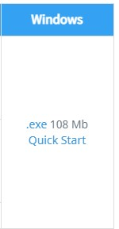
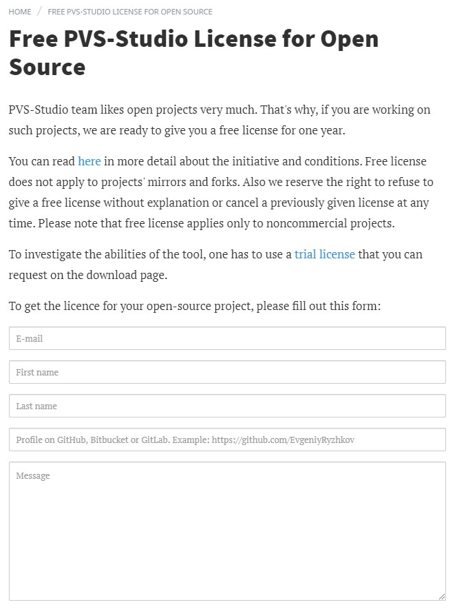
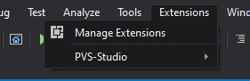
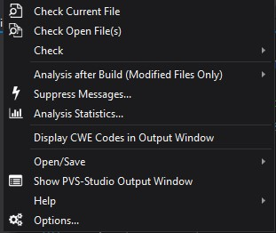
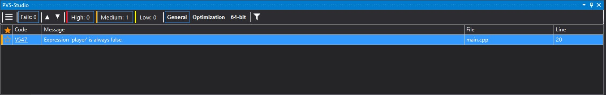
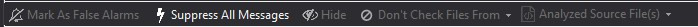
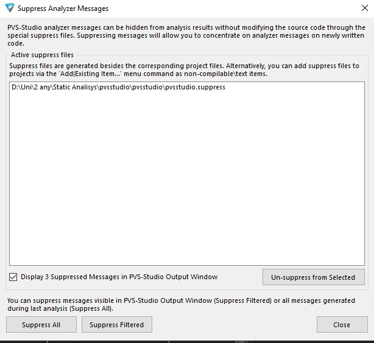

Installation
In this section I will show you how to install a Static Code Analysis tool, in our case, we will install PVS-Studio.
1. Go to the webpage for the installation Here
2. Select .exe 108 MB which is the windows, or just click here
3.Now this program is premium, but it has a free use for open source, click here and submit a request for a free license, it lasts for 1 year and you can do this every year for free!
4. Now that you have the program succesfully installed you can hop into visual studio and check on the "Extensions" menu, you should be able to see a new tab option, which is "PVS-Studio."
As you can see, you have plenty of options, let's test all of them.
Guide
1. Some previous knowledge
Let's talk a little bit about the interface of PVS-Studio and what options are available. Take a look at the next picture:
If PVS-Studio finds something that's off, it will warn you with a message. As you can see in the picture above, we have plenty of things going on. In the first line, we can see three horizontal rows, if you click that icon, the next options will appear:

• The first option, "Make as false alarm", will mark the selected problem as a false alarm, remember PVS-Studio isn't perfect, and could detect something as a mistake when in reality it is not.
• "Suppress all messages", as the name suggests, it will eliminate all messages from PVS-Studio, be carefull with this one.
• "Hide" will hide the type of message, so be carefull, as to unhide it later, you will have to go to PVS-Studio options to do it manually.
• "Don't check files from" will let you choose to not show messages from the same source as the selected one, again, be carefull.
• Finally, "Analyzed Source Files" will tell you which files were searched for the type of message selected.
Note: All the described above is hidden, so you don't missclick and make a mistake, in case you really need to access those options, you have to click the three horizontal rows.
Next image:
This one is pretty simple, it has the following:
• The two rows pointing up and down will allow you to navigate through the errors PVS-Studio found, this is great to go directly to see the specific error.
• "Fails" will tell you how many fails PVS-Studio found. Simple.
• The next lines, "High, Medium, Low" are filters that tells you what PVS-Studio thinks about those fails, if they are very problematic or medium, or just low problems. This is great to filter them quickly.
• The next options are filters to check general errors, optimization erros, or 64-bit errors, followed by a filter setting to have more options to filter.
Finally, we have the error section:
In this section, we have the errors:
• The star allows you to mark the error found, and no matter what kind of error is (Low, Medium, High) it will stay on top of the list if you mark it with the star.
• The code tells you what kind of error it is, if you click the code, it will search online for more information, very usefull.
• The message simply gives you a brief explanation of what PVS-Studio might think the problem is, you should always check this, as it might give you hints to find solutions.
• Finally, the File and Line give you the location of the error found by PVS-Studio.
Now that you know how the interface works, let's see which options does PVS-Studio give us.
2. Check current file
The first option, "Check current file" will analyze your current file, this works great if you want to just make a quick search into your current file, maybe to check before pushing anything. As soon as you click the option, give PVS-Studio some seconds, it will analyze your file and give you all the options described in point 1 above.
3. Check open files
"Check open files" will analyze all open tabs in your visual studio, it does the same thing as point two, but with multiple files.
4. Check
"Check" will give you three more options to analyze, you can analyze the current project itself, the selected items, or just analyze the entire solution.
5. Analysis after Build
This is simple, it will analyze as soon as you build the project, by default, it's on disabled.
6. Suppress messages
This one is pretty important, supress messages will open a new window where you have multiple options for suppressed messages, you could think of it as a "Recycle bin". If you remember in the "Some knowledge" part of the guide, there was an option to suppress selected messages, to find them back, you need to come here. Also you can supress messages directly here, unsuppress them, filter supressed, etc... To see supressed messages just check the box "Display N Suppressed Messages in PVS-Studio OutPut Window", and to unsuppress them, click the file where they are suppressed and press the option "Unsuppress from selected".